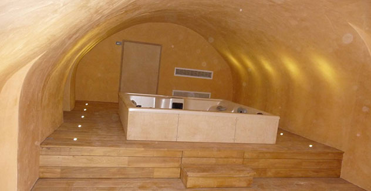
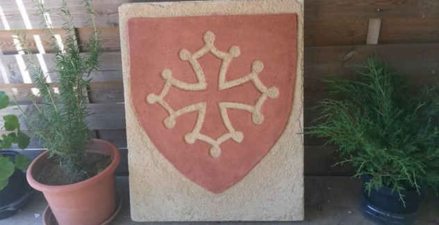
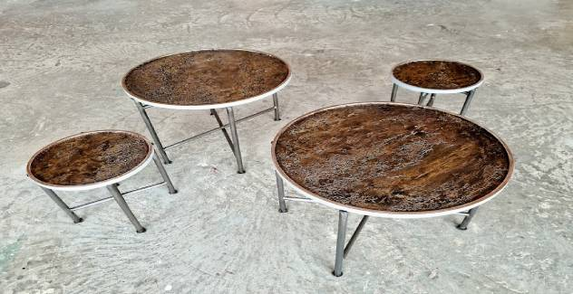

Dans le domaine de la peinture, des enduits, de la tapisserie et de la vitrification, Idée Déco vous propose une large gamme de techniques pour sublimer votre intérieur, en neuf comme en rénovation.
Cuisine aux murs rouges : chantier publié par Idée Déco
Peinture et décoration murale
Travaux de peinture en neuf ou en rénovation
Vous envisagez des travaux de peinture dans votre résidence principale ou secondaire, votre gîte ou votre entreprise ? Idée Déco vous guide à chaque étape, du choix de la peinture à la préparation du support et à son application, en neuf comme en rénovation.
Murs, plafonds et boiseries, façades, sols ; volets, portails, garde-corps, portes et fenêtres ; fer forgé, structures métalliques et moulures. Au-delà de la simple mise en couleur, les effets et les textures donnent une véritable personnalité à vos murs et façades.
Sur tous types de meubles, pour un aspect à la fois vieilli et moderne (une vieille armoire, une porte…).
Soucieuse de l’impact environnemental de son métier, l’entreprise propose des produits à l’eau, des peintures à faible teneur en composés organiques volatils et des procédés de nettoyage et de préparation respectueux de l’environnement.
Couloir habillé de papier peint : chantier publié par Idée Déco
Papier peint et revêtements muraux
Pose de papiers peints et de revêtements muraux
Très tendance, le papier peint a retrouvé toute sa place dans la maison. Tous les types peuvent être envisagés : traditionnels, vinyles, expansés, intissés, dans tous les styles, motifs et couleurs.
Choisir son papier peint est souvent complexe. Idée Déco propose de nombreuses collections sélectionnées auprès de fournisseurs reconnus pour la qualité de leurs revêtements, vous guide vers les modèles adaptés à vos envies et réalise la délicate étape de la pose.
Papiers peints à motif, intissés ou à peindre
Panoramiques, y compris personnalisés (image, couleur, graphisme)
Styles industriel, urbain, 3D, zen ou avec un personnage
Revêtement à peindre (intissé), toile de verre
Tissus à coller, tissus collés tendus
Pan de mur, couloir, cage d’escalier, tête de lit
Faciles d’entretien et résistants au temps, ils créent des ambiances singulières dans chaque pièce.
Chambre au parquet vitrifié : chantier publié par Idée Déco
Parquet et sols
Vitrification de parquet et pose de sols
Vitrification de parquets anciens (rénovation) ou neufs : ponçage et application d’un vernis adapté à votre intérieur, avec ou sans teinte, en aspect brillant, satiné ou mat. Vitrification également de meubles et de plafonds.
Résistante et esthétique, la vitrification est la technique de protection des parquets la plus employée : un film invisible et imperméable qui évite que les rayures ou les taches ne s’incrustent dans le bois.
Un vernis adapté à l’usage
Vernis en phase aqueuse, polyuréthane monocomposant ou bicomposant, sealer, vernis teinté… Le vitrificateur peut être teinté ou incolore. Le traitement dépend du passage : une chambre est moins sollicitée qu’un séjour ou une salle de réunion.
Les étapes de notre intervention
PréparationPonçage en 3 passages et rebouchage des trous.
Teinte et fond durMise à la teinte et application du fond dur.
VitrificationVernis choisi selon l’usage de la pièce.
Et les autres sols
Tous les sols ne sont pas en bois : quand un carrelage est trop abîmé, Idée Déco propose par exemple la pose de dalles PVC, au large choix de motifs et de couleurs.
Badigeons, patines, enduits naturels à l’argile, en terre crue et à la chaux, peinture à effet, sgraffito, stuc, papier peint… L’équipe applique des techniques traditionnelles ou plus modernes et adapte ses procédés à vos envies.
Les visuels « Chaux » et « Sgraffito » sont des illustrations de la page Techniques : origine (chantier ou banque d’images) à confirmer. Le visuel « Stuc » du site est écarté : des personnes y sont reconnaissables. Le nom « Stucco Geotek / Geodes » est à confirmer.
Visuel du site écarté : une personne y est reconnaissable. Photo à fournir par l’entreprise.
Stuc
Mélange de chaux aérienne, parfois avec sable, poudre de marbre ou de brique. Souvent peint « à fresco » sur l’enduit encore humide pour des couleurs vives et éclatantes ; pour plafonds et murs, en intérieur comme en extérieur.

Enduits à la chaux
Produit naturel adapté aux mouvements du bâti, la chaux limite l’apparition de fissures. Sa microperméabilité favorise les échanges hygrométriques du mur tout en le protégeant des eaux de ruissellement : idéale pour le bâti ancien.

Décoration sgraffito
Un revêtement de mortier orné d’un dessin gravé : on gratte les couches successives de couleurs pour faire apparaître chaque teinte à sa place. Technique très utilisée à la Renaissance et pendant l’Art nouveau.
Peintures sans effets
Parfois, pas besoin de technique particulière : 1 ou 2 couleurs, 3 tout au plus, pour délimiter des zones et mettre en avant un élément de la pièce.
Papier peint
Plus contemporain, plus graphique, le papier peint met en évidence un élément particulier d’une pièce.

Stucco à effet minéral
Une superposition de matières pour un effet minéral assuré, afin de sublimer un élément particulier de la pièce.
Contact
Parlons de votre projet
Pour toute demande d’information ou de devis, appelez-nous ou écrivez-nous. Nos peintres qualifiés sauront répondre à vos interrogations et vous conseilleront au mieux.
Si vous n’allez pas voir votre peintre, c’est votre peintre qui vient à vous !